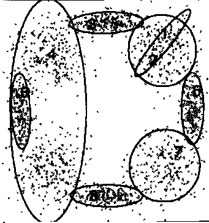
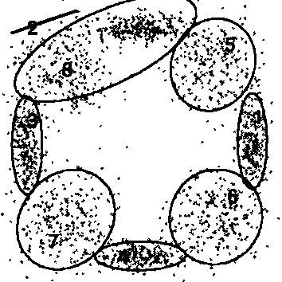

Mélange de lois normales#
Algorithme EM#
Définition D1 : mélange de lois normales
Soit  une variable aléatoire d’un espace vectoriel de dimension
une variable aléatoire d’un espace vectoriel de dimension  ,
suit un la loi d’un mélange de
,
suit un la loi d’un mélange de  lois gaussiennes de paramètres
lois gaussiennes de paramètres
 ,
alors la densité
,
alors la densité  de est de la forme :
de est de la forme :

Avec :  .
.
Dans le cas d’une loi normale à valeur réelle
 , l’algorithme permet d’estimer la loi de
l’échantillon
, l’algorithme permet d’estimer la loi de
l’échantillon  , il s’effectue en plusieurs itérations,
les paramètres
, il s’effectue en plusieurs itérations,
les paramètres  ,
,  ,
,
 sont choisis de manière aléatoire,
à l’itération
sont choisis de manière aléatoire,
à l’itération  , la mise à jour des coefficients est faite comme suit :
, la mise à jour des coefficients est faite comme suit :
![\begin{eqnarray}
f_{k,i}\pa{t} &=& p_i \pa{t} \; \dfrac{1}{\pa{2 \pi}^{\frac{d}{2}}\sqrt{\det \Sigma_i\pa{t}}} \;
\exp \pa{-\frac{1}{2} \pa{X_k-\mu_i\pa{t}}' \Sigma_i^{-1}\pa{t} \pa{X_k-\mu_i\pa{t}} } \\
\overline{f_{k,i}}\pa{t} &=& \frac{ f_{k,i}\pa{t} } { \sum_{i} \, f_{k,i}\pa{t} } \\
p_i\pa{t+1} &=& \frac{1}{T} \; \sum_{k=1}^{T} \; \overline{f_{k,i}}\pa{t} \\
\mu_i\pa{t+1} &=& \cro{ \sum_{k=1}^{T} \; \overline{f_{k,i}}\pa{t} }^{-1}
\; \sum_{k=1}^{T} \overline{f_{k,i}}\pa{t} X_k \\
\Sigma^2_i\pa{t+1} &=& \cro{ \sum_{k=1}^{T} \; \overline{f_{k,i}}\pa{t} }^{-1}
\; \sum_{k=1}^{T} \overline{f_{k,i}}\pa{t} \,
\pa{ X_k - \mu_i\pa{t+1}} \pa{ X_k - \mu_i\pa{t+1}}'
\end{eqnarray}](../_images/math/31af739cfaee43de7122bb951742a335f5363526.svg)
L’estimation d’une telle densité s’effectue par l’intermédiaire d’un algorithme de type Expectation Maximization (EM) (voir [Dempster1977]) ou de ses variantes SEM, SAEM, … (voir [Celeux1985], [Celeux1985b]). La sélection du nombre de lois dans le mélange reste un problème ouvert abordé par l’article [Biernacki2001].
Competitive EM algorithm#
L’algorithme développé dans l’article [ZhangB2004] tente de corriger les défauts de l’algorithme EM. Cette nouvelle version appelée « Competitive EM » ou CEM s’applique à un mélange de lois - normales en particulier -, il détermine le nombre de classes optimal en supprimant ou en ajoutant des classes.
|  |  | 
|
Figures extraites de [ZhangB2004], la première image montre deux classes incluant deux autres classes qui devrait donc être supprimées. La seconde image montre une classe aberrante tandis que la troisième image montre des classes se recouvrant partiellement.
On considère un échantillon de variables aléatoires indépendantes et
identiquement distribuées à valeur dans un espace vectoriel de
dimension . Soit une telle variable,
on suppose que suit la loi du mélange suivant :

Avec :  et
et  .
.
On définit pour une classe  la probabilité
la probabilité
 qu’elle doive être divisée
et celle qu’elle doive être associée à une autre
qu’elle doive être divisée
et celle qu’elle doive être associée à une autre
 .
Celles ci sont définies comme suit :
.
Celles ci sont définies comme suit :
(1)#
 est une constante définie par expériences.
est une constante définie par expériences.
 est défini pour l’échantillon
est défini pour l’échantillon  par :
par :

Où :  .
.
La constante  est choisie de telle sorte que les
probabilités et
vérifient :
est choisie de telle sorte que les
probabilités et
vérifient :

L’algorithme EM permet de construire une suite
 maximisant la vraisemblance à partir de poids
maximisant la vraisemblance à partir de poids  .
L’algorithme CEM
est dérivé de l’algorithme EM :
.
L’algorithme CEM
est dérivé de l’algorithme EM :
Algorithme A1 : CEM
Les notations sont celles utilisées dans les paragraphes précédents.
On suppose que la variable
aléatoire  où est la variable
observée et
où est la variable
observée et  la variable cachée.
la variable cachée.  désigne
le nombre maximal d’itérations.
désigne
le nombre maximal d’itérations.
initialisation
Choix arbitraire de  et
et  .
.
Expectation

Maximization

convergence
 ,
si
,
si  n’a pas convergé vers un maximum local, alors on retourne à
l’étape Expectation.
n’a pas convergé vers un maximum local, alors on retourne à
l’étape Expectation.
division ou regroupement
Dans le cas contraire, on estime les probabilités
et
définie par les expressions (1). On choisit aléatoirement
une division ou un regroupement (les choix les plus probables ayant le plus de chance
d’être sélectionnés). Ceci mène au paramètre  dont la partie modifiée par rapport à
est déterminée de manière aléatoire. L’algorithme EM est alors appliqué aux
paramètres jusqu’à convergence aux paramètres
dont la partie modifiée par rapport à
est déterminée de manière aléatoire. L’algorithme EM est alors appliqué aux
paramètres jusqu’à convergence aux paramètres  .
.
acceptation
On calcule le facteur suivant :

On génére aléatoirement une variable  ,
si
,
si  , alors les paramètres
sont validés.
, alors les paramètres
sont validés.  et retour à l’étape d’expectation. Dans le cas contraire, les paramètres
sont refusés et retour à l’étape précédente.
et retour à l’étape d’expectation. Dans le cas contraire, les paramètres
sont refusés et retour à l’étape précédente.
terminaison
Si  , on retoure à l’étape d’expectation,
Sinon, on choisit les paramètres
, on retoure à l’étape d’expectation,
Sinon, on choisit les paramètres  qui maximisent l’expression :
qui maximisent l’expression :
(2)#
Avec  le nombre d’exemples et
est le nombre de paramètres spécifiant chaque composant.
le nombre d’exemples et
est le nombre de paramètres spécifiant chaque composant.
L’article [ZhangB2004] prend  mais ne précise pas de valeur pour
qui dépend du problème. Toutefois, il existe un cas supplémentaire
où la classe doit être supprimée afin d’éviter sa convergence vers
les extrêmes du nuage de points à modéliser. Si
mais ne précise pas de valeur pour
qui dépend du problème. Toutefois, il existe un cas supplémentaire
où la classe doit être supprimée afin d’éviter sa convergence vers
les extrêmes du nuage de points à modéliser. Si  ,
le nombre moyen de points inclus dans une classe est inférieur au
nombre de paramètres attribués à cette classe qui est alors supprimée.
Cette condition comme l’ensemble de l’article s’inspire de l’article [Figueiredo2002]
dont est tiré le critère décrit en (ref{classif_cem_cirtere}).
,
le nombre moyen de points inclus dans une classe est inférieur au
nombre de paramètres attribués à cette classe qui est alors supprimée.
Cette condition comme l’ensemble de l’article s’inspire de l’article [Figueiredo2002]
dont est tiré le critère décrit en (ref{classif_cem_cirtere}).
Bibliographie#
{Assessing a Mixture Model for Clustering with the Integrated Completed Likelihood (2001), C. Biernacki, G. Deleux, G. Govaert, IEEE Transactions on Image Analysis and Machine Intelligence, volume {22(7), pages 719-725
The SEM algorithm: a probabilistic teacher algorithm derived from the EM algorithm for the mixture problem (1985), G. Celeux, J. Diebolt, Computational Statistics Quarterly, Volume 2(1), pages 73-82
On stochastic version of the EM algorithm (1985), Gilles Celeux, Didier Chauveau, Jean Diebolt, Rapport de recherche de l’INRIA*, n 2514
Maximum-Likelihood from incomplete data via the EM algorithm (1977), A. P. Dempster, N. M. Laird, D. B. Rubin, Journal of Royal Statistical Society B, volume 39, pages 1-38
Unsupervised learning of finite mixture models (2002), M. A. T. Figueiredo, A. K. Jain, IEEE Transactions on Pattern Analysis and Machine Intelligence, volume 24(3), pages 381-396